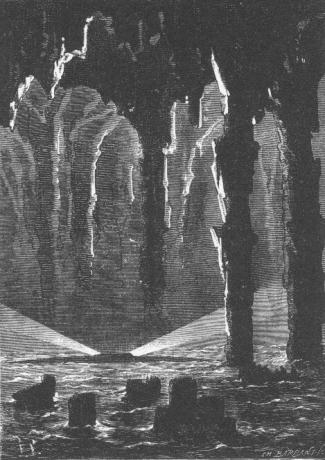

The colonists, notified by the engineer, stopped working and looked in silence at the top of Mount Franklin.
The volcano had awakened and the vapors had pierced the mineral layer piled up at the bottom of the crater. But would the subterranean fires provoke some violent eruption? That was the eventuality which they could not foretell.
However, even admitting the hypothesis of an eruption, it was probable that Lincoln Island would not suffer from it in its entirety. The outpouring of volcanic material is not always disastrous. The island had already been subjected to this experience, as evidenced by the lava flows which streaked the northern slopes of the mountain. Besides the form of the crater, the break in its upper fringe would project the vomited material to the side opposite the fertile portions of the island.
Nevertheless, the past does not necessarily speak for the future. Often, at the top of volcanos, old craters close and new ones open. The event has occurred in both worlds, at Etna, at Popocatepetl and at Orizaba. At the brink of an eruption there is everything to fear. On the whole, it may result from an earthquake—a phenomenon which sometimes accompanies volcanic outpourings—which changes the interior disposition of the mountain and blazes new paths for the incandescent lava.
Cyrus Smith explained these things to his companions and without exaggerating the situation, he let them know what they were up against.
After all, they could do nothing about it. Granite House at least, did not seem to be menaced from an earthquake. But there was everything to fear with regards to the corral if some new crater should open in the southern wall of Mount Franklin.
From this day on, the vapors did not cease to pour out from the top of the mountain and they even saw it gain in height and thickness without any flames mixing with the thick spirals. The phenomenon was still concentrated in the lower part of the central chimney.
However, with the good weather, work was resumed. They pressed on as much as possible with the construction of the vessel and by means of the waterfall on the beach, Cyrus Smith succeeded in making a hydraulic saw which cut up the tree trunks more rapidly into boards and planks. The mechanism of this apparatus was as simple as that used in the country saws of Norway. A horizontal movement is first imparted to the wood, a vertical movement is then given to the saw, that is all that is needed, and the engineer succeeded in making it by means of a wheel, two cylinders and pulleys suitably arranged.
Toward the end of the month of September, the frame of the vessel, which would be rigged as a schooner, rose up over the shipyard. The ribs were almost completely finished and with all these timbers being supported in a temporary arch, they could already appreciate its shape. This schooner, slender in front and with a streamlined shape rearward, would evidently be appropriate for a rather long voyage if need be; but the layout of the bulwarks, the inner planking and the deck, would still require considerable time. Very fortunately, the ironwork from the old brig had been saved after the underwater explosion. From the planks and the mutilated ribs, Pencroff and Ayrton had extracted bolts and a large quantity of copper nails. It was a good economy for the forgers but the carpenters had much to do.
The construction activity had to be interrupted for a week for the harvesting of hay and the various crops which abounded on Grand View Plateau. This task ended, every moment was henceforth devoted to the completion of the schooner.
When night arrived, the laborers were truly exhausted. In order to lose no time they changed their mealtimes: they dined at noon and supped only when there no longer was any daylight. Then they ascended to Granite House, hurrying off to sleep.
Sometimes however, when the conversation concerned some interesting subject, they delayed a little in going to sleep. The colonists allowed themselves to speak of the future and they willingly chatted about the changes that a voyage with the schooner to the nearest land would bring about in their situation. But these plans were always dominated by the thought of a subsequent return to Lincoln Island. Never would they abandon this colony, founded with so much pain and success, and to which communications with America would give a new development.
Pencroff and Neb especially hoped to end their days here.
“Herbert,” the sailor would say, “will you never abandon Lincoln Island?”
“Never, Pencroff, and especially if you resolve to remain here!”
“At any price, my boy,” Pencroff would reply. “I will wait for you. You will bring me your wife and your children and I will make jolly fellows of them!”
“That is my intention,” replied Herbert, smiling and blushing at the same time.
“And you, Mister Cyrus,” resumed Pencroff enthusiastically, “you will always be the governor of the island. Now then, how many inhabitants can it support? Ten thousand at least!”
They chatted in this way, allowing Pencroff to run on and on and, with one thing leading to another, the reporter ended by founding a journal, the New Lincoln Herald!
Such is the heart of man. The need to do something which endures, which survives him, is the sign of his superiority over all he sees before him. This is the foundation of his domination and which justifies it over the entire world.
After all, who knows if Top and Jup did not themselves also have some small dream of the future.
Ayrton, silent, said to himself that he would like to see Lord Glenarvan again and show himself rehabilitated.
One evening, the 15th of October, the conversation was directed along these lines and prolonged more than usual. It was nine o’clock in the evening. Already poorly concealed yawns sounded bedtime and Pencroff was about to go to his bed when the electric bell, placed in the room, suddenly rang.
All were there, Cyrus Smith, Gideon Spilett, Herbert, Ayrton, Pencroff and Neb. None of the colonists were at the corral.
Cyrus Smith got up. His companions looked at each other, thinking that they had not heard correctly.
“What is that thing trying to tell us?” shouted Neb. “Is it the devil who rang?”
No one replied.
“The weather is stormy,” noted Herbert. “Couldn’t the influence of the electricity...”
Herbert did not finish his sentence. The engineer, to whom all eyes were turned, shook his head negatively.
“Let us wait,” Gideon Spilett then said. “If it is a signal, whoever made it will renew it.”
“But who could it be?” shouted Neb.
“But,” replied Pencroff, “the one who...”
The sailor’s sentence was cut short by a new vibration of the bell.
Cyrus Smith went toward the apparatus and throwing a current across the wire, he sent this request to the corral:
“What do you wish?”
A few moments later the needle moved across the alphabetical dial and gave this response to the hosts of Granite House:
“Come to the corral with all possible speed.”
“At last,” shouted Cyrus Smith.
Yes! At last! The mystery was about to be revealed! Before this immense interest which was driving the colonists toward the corral, all fatigue had disappeared, all need for sleep had ceased. Without saying a word they left Granite House and in a few moments they found themselves on the beach. Only Top and Jup remained behind. They could do without them.
The night was black. The moon, new that very day, had disappeared at the same time as the sun. As Herbert had noted, large storm clouds formed a low heavy canopy which hid the light from the stars. A few glows from a distant storm lit up the horizon.
It was possible that a few hours later the lightning would strike the island itself. It was a menacing night.
But the obscurity, as deep as it was, could not hinder these men who were familiar with the route to the corral. They ascended the left bank of the Mercy, reached the plateau, passed the bridge over Glycerin Creek and advanced through the forest.
They moved at a good clip, prey to vivid emotions. They had no doubt that they were going to discover the long sought answer to the enigma, the name of the mysterious being, so deeply intertwined in their lives, so generous in his influence, so powerful in his action! Was it not a fact that the stranger had been involved with their lives, that he knew the smallest details, that he had listened to all that was said at Granite House in order to be able to act in the nick of time?
Each, lost in his thoughts, pressed on. Under the cover of the trees, the obscurity was such that they could not even see the edge of the road. Besides, there was no sound from the forest. Quadrupeds and birds, influenced by the heaviness of the atmosphere, were still and silent. No wind ruffled the leaves. Only the colonists’ footsteps sounded in the darkness on the hard ground.
During the first quarter hour of their trip, the silence was interrupted by this observation from Pencroff.
“We should have taken a lantern.”
And by this response from the engineer:
“We will find it at the corral.”
Cyrus Smith and his companions had left Granite House at twelve minutes after nine o’clock. At forty seven minutes after nine, they had travelled three of the five miles which separated the mouth of the Mercy from the corral.
At this moment, large white flashes of lightning brightened the sky over the island and delineated the black border of the foliage. These intense bursts were dazzling and blinding. Evidently the storm could not be long in letting loose. Little by little, the flashes of lightning became more frequent and brighter. There were distant rumblings in the depths of the sky. The air was stifling.
The colonists pushed forward as if propelled by some irresistible force.
At a quarter past ten a vivid flash of lightning showed them the palisaded enclosure and they had not passed the door when thunder burst forth with a formidable violence.
In an instant the corral was crossed and Cyrus Smith found himself in front of the house.
It was possible that the house was occupied by the stranger since it was from the house itself that the telegram must have been sent. Nevertheless no light appeared in the window.
The engineer knocked on the door.
There was no response.
Cyrus Smith opened the door and the colonists entered the room which was very dark.
Neb struck a light and an instant later a lantern was lit and directed toward every corner of the room...
No one was there. Things were exactly as they had left them.
“Have we been duped by an illusion?” murmured Cyrus Smith.
No! It was not possible! The telegram had clearly said:
“Come to the corral with all possible speed.”
They approached the table used especially for the telegraph. Everything was in place, the battery and the box which housed it, as well as the receiver and the transmitter.
“Who was here last?” asked the engineer.
“I, Mister Smith,” replied Ayrton.
“And that was?...”
“Four days ago.”
“Ah! a note!” shouted Herbert, pointing to a sheet of paper on the table.
On this sheet were written these words in English:
“Follow the new wire.”
“Forward!” shouted Cyrus Smith, who understood that the dispatch had not been sent from the corral but rather from the mysterious retreat, using a supplementary wire attached to the old wire and communicating directly with Granite House.
Neb took the lighted lantern and they all left the corral.
The storm then let loose with extreme violence. The interval which separated each flash of lightning and each clap of thunder sensibly diminished. Before long, the weather dominated Mount Franklin and the entire island. During the intermittent flashes they could see the summit of the volcano pouring out vapors.
There was no telegraphic communication in all of the portion of the corral which separated the house from the palisaded enclosure. But after passing the door, the engineer, going straight to the first post, saw by the light of a flash that a new wire went from the insulator to the ground.
“There it is!” he said.
This wire was stretched out on the ground but along its entire length it was surrounded with an insulating material as is done with submarine cables to assure the free transmission of the current. From its direction it seemed to be going across the woods and the southern buttresses of the mountain and consequently it ran to the west.
“Let us follow it!” said Cyrus Smith.
And either by the light from the lantern or from the lightning, the colonists rushed along the route traced out by the wire.
The thunder was then continuous and its violence such that no word could be heard. Besides, they were using their strength not to speak but to go forward.
Cyrus Smith and those with him first went to the buttress which rose up between the valley of the corral and that of Falls River, which they crossed in its narrowest part. The wire, sometimes spread out on the lower tree branches, sometimes lying on the ground, guided them surely.
The engineer had supposed that the wire would perhaps end at the bottom of the valley and that the unknown retreat would be there.
There was nothing of the sort. They had to reascend the southwest buttress and redescend onto the arid plateau which was terminated by this wall of basalts piled up so strangely. From time to time one or another of the colonists got down to feel the wire with his hand and to rectify the direction if need be. But there was no longer any doubt that this wire was running directly to the sea. There doubtless, in some depth of the igneous rocks, was hollowed out the dwelling so vainly sought until then.
The sky was on fire. One flash did not wait for the other. A few struck the top of the volcano and fell into the crater amidst the thick fumes. A few times they thought that the mountain projected flames.
A few minutes before eleven o’clock, the colonists arrived at the high border which overlooked the ocean to the west. The wind was high. The surf was roaring five hundred feet below.
Cyrus Smith calculated that his companions and he had travelled a distance of a mile and a half from the corral.
At this point the wire went in among the rocks, following a rather steep slope into a narrow and capriciously traced ravine.
The colonists went there at the risk of provoking some cavein of the poorly balanced rocks and being thrown into the sea. The descent was extremely perilous but they were not concerned with the danger. They were no longer masters of themselves and an irresistible attraction drew them toward this mysterious point like a magnet attracts iron.
Almost unconsciously, they descended this ravine which even in full daylight would have been impractical so to say. The stones rolled over and glistened like enflamed bolides. Cyrus Smith was at the head. Ayrton was at the rear. Here they went step by step; there they slipped on a smooth rock; then they got up again and continued on their way.
Finally the wire, turning a sharp corner, touched the rocks on shore, rocks which were scattered about the reefs and battered by the high tides. The colonists had reached the lower limit of the basaltic wall.
There they found a narrow shoulder which ran horizontally and parallel to the sea. The wire followed it and the colonists went along. They had not gone a hundred feet when the shoulder, inclined at a moderate slope, reached the very level of the waves.
The engineer seized the wire and he saw that it ran into the sea.
His companions, stopping near him, were stupefied.
A cry of disappointment, nearly a cry of desperation, escaped them. Must they then throw themselves under the waves to find some submarine cavern there? In the overexcited moral and physical state that they found themselves in, they would not have hesitated to do it.
A thought from the engineer stopped them.
Cyrus Smith led his companions to one of the hollows among the rocks and there:
“Let us wait,” he said. “The tide is high. At low tide the pathway will open up.”
“But what makes you think?...” asked Pencroff.
“He would not have called for us if there were no means for getting to him!”
Cyrus Smith spoke with such conviction that no objection was raised. Besides, his observation was logical. They had to admit that an opening, practical at low tide but covered by the waves at the moment, would open up at the foot of the wall.
There were a few hours to wait. The colonists therefore remained silently crouched under a sort of deep porch cut into the rock. The rain then began to fall which soon became torrents condensed from the clouds and wrenched loose by the thunderbolts. The echoes reverberated the roar of the thunder and gave it a grandiose sound.
The colonists’ emotion was extreme. A thousand strange supernatural thoughts crossed their minds and they evoked some grand and superhuman apparition which alone could correspond to the image that they had of the mysterious genie of the island.
At midnight Cyrus Smith, carrying the lantern, descended to beach level in order to observe the disposition of the rocks. It was already two hours into low tide.
The engineer had not been mistaken. The arch of a vast excavation began to appear above the water. The wire, bending at a right angle, went into this gaping mouth.
Cyrus Smith returned to his companions and simply said to them:
“In an hour the opening will be practical.”
“It exists then?” asked Pencroff.
“Did you doubt it?” replied Cyrus Smith.
“But this cavern will be filled with water to a certain height,” noted Herbert.
“Either the cavern will be completely dry,” replied Cyrus Smith, “and in that case we will proceed on foot, or it will not be dry and some means of transportation will be at our disposal.”
An hour passed. Everyone descended in the rain to the level of the sea. In three hours the sea had dropped fifteen feet. The top of the arc traced out by the arch was at least eight feet high. It was like the arch of a bridge under which water passes, mixed with foam.
Leaning over, the engineer saw a black object floating on the surface of the sea. He drew it toward him.
It was a boat moored by a cord to some interior projection of the wall. The boat was made of riveted sheet iron. The oars were below, under the seats.
“Let us get in,” said Cyrus Smith.
A moment later, the colonists were in the boat. Neb and Ayrton took the oars, with Pencroff at the rudder. Cyrus Smith was up front, with the lantern placed on the stern, lighting up the way.
The arch was very low when the boat first passed under it. Then it rose sharply; but it was very dark and the light from the lantern was insufficient for them to recognize the extent of this cavern, its length, its height, its depth. In the midst of this basaltic substructure, there reigned an imposing silence. No sound from the outside could penetrate here and the flashes of lightning could not pierce its thick walls.
These immense caverns exist in several parts of the world. They are sort of natural crypts which date from geological times. Some are invaded by the waters of the sea; others contain entire lakes within their sides. Such is Fingal’s Cave on the island of Staffa, one of the Hebrides, such are the caves of Morgat, on the bay of Douarnenez in Brittany, the caves of Bonifacio in Corsica, those of Lyse-Fjord in Norway, such is the immense cavern of Mommoth in Kentucky, five hundred feet high and more than twenty miles long. At several points of the globe, nature has hollowed out these crypts and preserved them for the admiration of man.
As to this cavern which the colonists were now exploring, did it extend to the center of the island? For a quarter of an hour the boat advanced, making such detours as the engineer briefly indicated to Pencroff, when at a certain moment:
“More to the right,” he commanded.
The boat, changing its direction, went at once along the right wall. The engineer wanted, with justification, to determine if the wire was still running along this wall.
The wire was there, hanging from the projections in the rocks.
“Forward!” said Cyrus Smith.
The two oars plunged into the dark waters, moving the boat.
The boat advanced for another quarter of an hour and they must have crossed a distance of half a mile from the cavern opening when Cyrus Smith’s voice was heard anew.
“Stop!” he said.
The boat stopped and the colonists saw a vivid light which illuminated the enormous crypt so deeply hollowed out into the bowels of the island.
It was then possible to examine this cavern whose existence there had been no reason to suspect.
One arch, rounded out at a height of a hundred feet, was supported on basalt columns which seemed to have been cast from the same mold. Irregular arches and capricious ribs were supported by columns which nature had erected by the thousands during the first eras of the formation of the globe. The basaltic sections, enmeshed in one another, measured forty to fifty feet in height and the peaceful waters washed their base in spite of the outside agitation. The glare from the source of illumination, pointed out by the engineer, seized each prismatic edge and, sharpening it to points of light, penetrated so to speak the walls as if they had been transparent, and changed the smallest projections of this structure into brilliant reflectors.
As a result of the phenomenon of reflection, the water reproduced these various glares on its surface so that the boat seemed to float between two sparkling zones.
There was no mistake about the nature of the radiation emanating from the central luminary whose straight clear rays struck all corners and all filets of the crypt. This light came from an electric source and its white color betrayed its origin. It was the sun of this cavern and it filled it completely.
On a sign from Cyrus Smith, the oars were dipped in again, producing a real rain of carbuncles, and the boat moved toward the luminous focus. It soon was less than half a cable from it.
At this point, the width of the sheet of water measured about three hundred fifty feet and they could see, beyond the central brilliance, an enormous basaltic wall which shut off any exit on this side. The cavern was considerably enlarged and the sea formed a small lake here. But the arch, the lateral partitions, the rear wall, all these prisms, cylinders and cones were bathed in this electrical fluid to the point that the radiancy seemed to be their own and one could say that these stones, sharpened to facets like expensive diamonds, oozed with light.
At the center of the lake, a long spindle shaped object floated on the surface of the water, silent and still. The radiation escaped from its sides like two openings from a furnace which has been heated to a white heat. This object, which looked like the body of an enormous whale, was about two hundred fifty feet long and rose from ten to twelve feet above the level of the sea.

A long spindle shaped object floated on the surface of the water...
The boat approached it slowly. In front, Cyrus Smith was standing. He looked, a prey to a violent agitation. Then he suddenly seized the reporter’s arms.
“But it is he! It can only be he!” he shouted, “he!...”
Then he fell back on his seat, murmuring a name that only Gideon Spilett heard.
Doubtless the reporter recognized this name because it had a prodigious effect on him and he replied in a hollow voice:
“He! An outlawed man!”
“He!” said Cyrus Smith.
On the engineer’s order, the boat approached this strange floating apparatus. The boat came alongside the left quarter from which a beam of light escaped through a thick glass.
Cyrus Smith and his companions climbed on to the platform. An open hatchway was there. All rushed into the opening.
At the base of the ladder there was an interior gangway lighted by electricity. At the end of this gangway was a door pushed open by Cyrus Smith.
A richly ornamented room, which was quickly crossed by the colonists, contained a library with a ceiling that poured out a torrent of light.
At the rear of the library a large door, also closed, was opened by the engineer.
A vast salon, a sort of museum crowded with all the mineral treasures of nature, works of art and marvels of industry, appeared before the colonists’ eyes which led them to believe that they were magically carried into the world of dreams.
Extended on a costly divan they saw a man who did not seem to be aware of their presence.
Then Cyrus Smith raised his voice and to the extreme surprise of his companions, he pronounced these words:
“Captain Nemo, you have asked for us. We are here.”